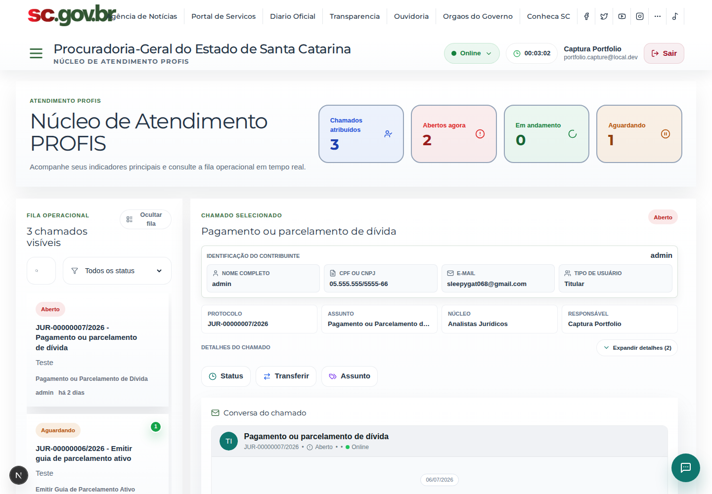
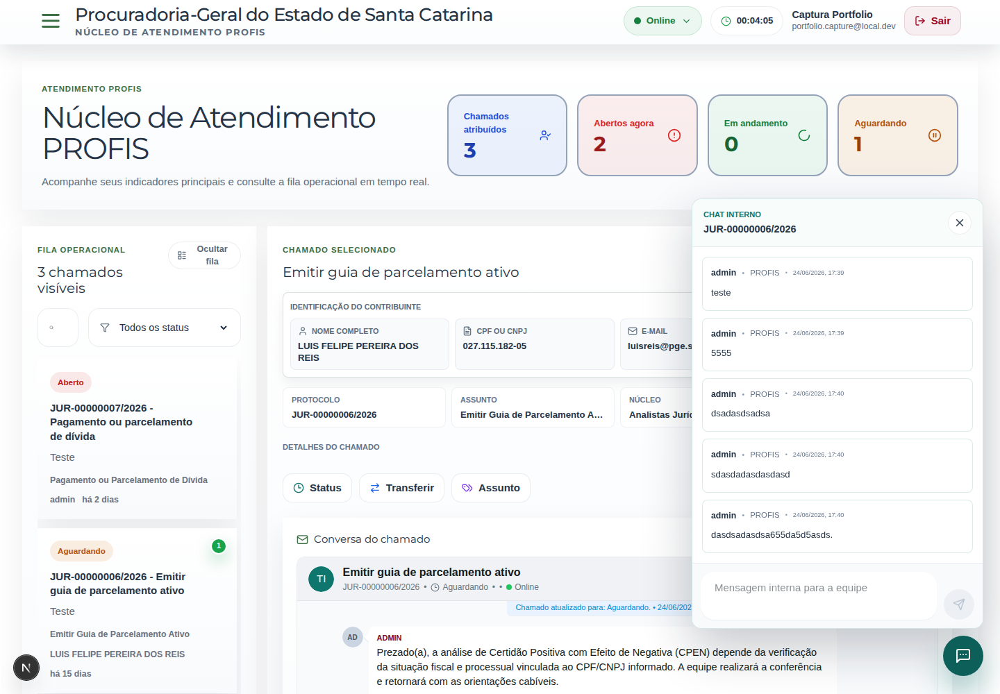
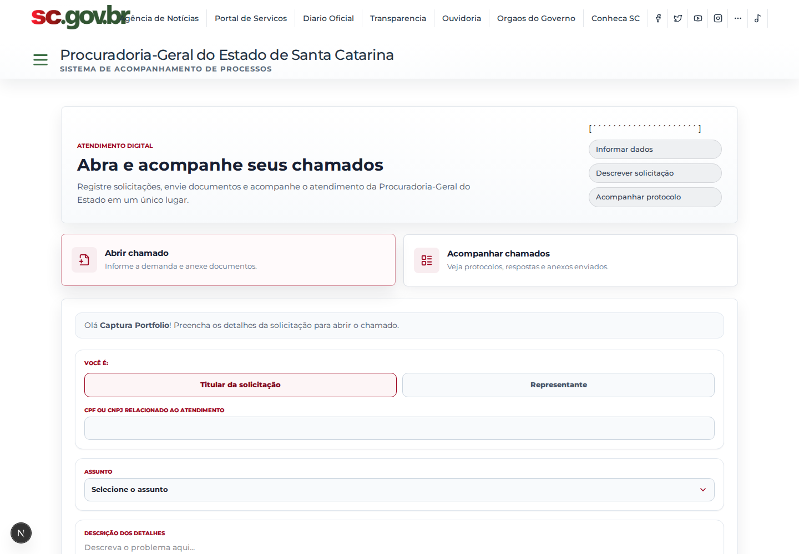
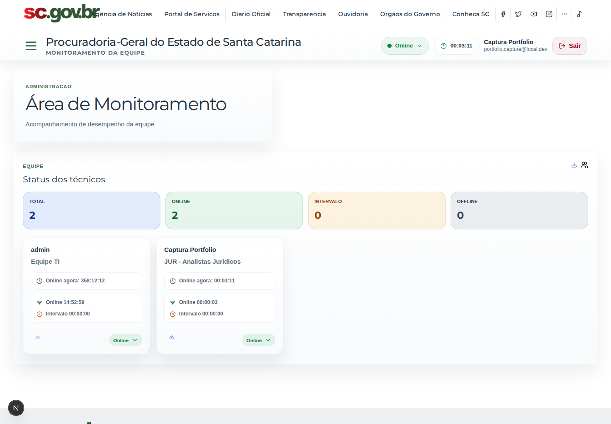

Produtos apresentados como estudos de caso, com contexto, responsabilidade e telas reais.
Florianópolis, SC · 2026
Eu construo software para resolver trabalho de verdade.
Sou Luis Felipe Reis, desenvolvedor full stack. Transformo rotinas jurídicas e administrativas em sistemas que as pessoas conseguem usar, manter e evoluir.

Plataforma PGE — produto em operação
01 / 06
01 — Sobre
Do problema de negócio ao container em produção.
Crio sistemas web completos para transformar rotinas reais em produtos organizados, com frontend, backend, banco de dados, automações, integrações e infraestrutura preparada para execução em Docker.
Meu trabalho passa por entender o processo existente, reduzir etapas manuais e entregar uma solução completa. Isso inclui interface, API, banco, integrações, observabilidade e o ambiente Docker onde o sistema realmente roda.
Descoberta, interface, backend, banco de dados, integrações e deploy.
Desenvolvimento e validação em containers próximos da produção.
02 — Projetos selecionados
Problema, implementação e resultado. Sem conceito fictício.
01 / Plataforma institucional
Plataforma PGE
Hub institucional que centraliza sistemas internos da PGE-SC, autenticação, permissões, favoritos, notificações e atalhos para módulos administrativos e jurídicos. O módulo funciona como porta de entrada para ferramentas como Pareceres, Atos Normativos, Pautas, SAP, Reserva de Salas, Eventos, Chamados, Atendimento Profis e Contratos.
O que entrega
- Login institucional com credenciais locais, Google e Gov.br
- Dashboard unificado para entrada nos sistemas corporativos
- Central de Admin para acessar backends administrativos
- Perfil do usuário, sessão, permissões e navegação protegida
- Integração com módulos externos por URLs de ambiente
Frontend
Backend e dados
Infra e integrações
Serviços frontend, backend e db, com Next.js em 3000, Django em 8000 e PostgreSQL em 5432.
JWT, cookies httpOnly, usuário autenticado, grupos administrativos e bloqueio de ferramentas sem permissão.
Centraliza URLs de sistemas satélites e mantém a experiência de entrada única para módulos internos.
Galeria do módulo
Telas capturadas do ambiente Docker de desenvolvimento.


Módulo 02
Sistema SAP
Sistema de acompanhamento de processos SGPE integrado à Plataforma PGE. O módulo organiza processos por setor, prioridade, situação, responsáveis, observações e favoritos, com atualização automática pelo scheduler e ações operacionais para concluir, reabrir, editar e sincronizar registros.

O que entrega
- Acompanhamento de processos SGPE por setor do usuário
- Tabela com prioridade, responsáveis, observações e ações rápidas
- Filtro geral, favoritos, processos concluídos e preferências de colunas
- Notificações, comentários e histórico de observações por processo
- Scheduler backend para sincronização automática com SGPE/Boavista
Frontend
Backend e dados
Integrações
Serviços frontend, backend, scheduler e db, publicados em 3004, 8004 e 5436.
O scheduler executa sincronizar_processos_periodicamente e atualiza os processos cadastrados no backend.
Processos ficam no PostgreSQL com setor, distribuição, responsável, observações, tramitações, notificações e estado de arquivamento.
Galeria do módulo
Telas capturadas do SAP rodando em Docker Compose.


Módulo 03
Pareceres
Sistema jurídico para consulta, cadastro, gestão e publicação de pareceres, com leitura de PDFs, metadados de processo, sigilo, assinatura, superação de pareceres, integração com SGPe e rotinas mineradoras. O mesmo backend também sustenta Atos Normativos, Despacho Jurídico, Petição Inicial, Corregedoria e fluxos de dispensa de recursos.

O que entrega
- Consulta e filtros de pareceres com busca textual e metadados jurídicos
- Cadastro e edição com documentos, assinatura, sigilo, status e ementa
- Visualização de PDF, peças SGPe, pareceres superados e histórico
- Atos Normativos, Despacho Jurídico, Petição Inicial e Corregedoria
- Rotinas de mineração para SGPe, Drive PGE, SAJ e dispensa de recursos
Frontend
Backend e busca
Documentos e integrações
A entrada passa pela Plataforma, com login institucional e encaminhamento para o módulo protegido de pareceres.
Jobs importam documentos do SGPe, Drive PGE, SAJ e bases externas, alimentando PostgreSQL e índices Elasticsearch.
O backend aplica status, sigilo, permissões de edição/exclusão, assinatura e vínculos entre pareceres.
Galeria do módulo
Telas internas do Pareceres logado: consulta, busca, cadastro, documento, peças SGPe e dados do processo.


Módulo 04
Atendimento Profis
Central de atendimento para demandas Profis, com abertura de chamados pelo portal, triagem operacional, acompanhamento por status, técnicos, setores, anexos, respostas por portal/e-mail, mensagens internas e monitoramento da equipe. O módulo segue o padrão da Plataforma PGE e usa Docker Compose para frontend, backend e banco em desenvolvimento.
O que entrega
- Abertura pública de chamados Profis com documentos e protocolo
- Fila operacional com status, prioridades, técnicos e setor atual
- Chat interno flutuante, badges numéricos e alertas sonoros
- Histórico, anexos, respostas por portal/e-mail e avaliação
- Monitoramento de técnicos, produtividade e transferência entre setores
Frontend
Backend e dados
Integrações e operação
Serviços frontend, backend e db, publicados em 3010, 8010 e 5445.
O chamado nasce pelo portal, recebe setor/categoria, passa por triagem técnica e mantém histórico, anexos e comunicação com o solicitante.
O backend expõe mensagens-internas, typing status, marcação de leitura e badges para trabalho em equipe.
Galeria do módulo
Telas reais capturadas do módulo Atendimento Profis em execução local.




Módulo 05
Pareceres IA
Assistente jurídico conversacional conectado à base de pareceres. A experiência agora reúne chat próprio, respostas transmitidas em tempo real, recuperação de trechos relevantes e citações verificáveis. O modelo roda localmente com Ollama, mantendo API, banco, documentos e inferência no mesmo ambiente Docker.

O que entrega
- Interface de chat responsiva com temas claro e escuro
- Resposta progressiva via
/ask/streame Server-Sent Events - Ingestão de documentos vindos do Miner/Pareceres para base RAG
- Chunking de texto bruto ou PDF e marcação de documentos processados
- Citações expansíveis com arquivo, trecho e relevância da fonte
- Nova conversa, sugestões de perguntas e estado online da API
Produto e API
Dados e busca
IA e operação
Serviços api, db, minio e ollama. A inferência fica isolada na rede interna e a interface abre em 8100.
/ingest seleciona rag_documents, carrega texto bruto ou PDF, cria chunks e registra o processamento no PostgreSQL.
A busca recupera os trechos, o Qwen gera a síntese por streaming e o chat mantém cada afirmação ligada às fontes encontradas.
Galeria do módulo
Nova experiência conversacional capturada no ambiente Docker com Ollama e base real.


Módulo 06
Sistema de Cadastro de Eventos
Plataforma Quórum para publicação, inscrição e operação de cursos e eventos. O módulo reúne vitrine pública, página de detalhes, formulário de inscrição, gestão administrativa, participantes, presença por QR Code, lembretes, exportação de listas e geração de certificados.

O que entrega
- Vitrine pública de cursos e eventos com filtros por órgão, local e inscrições
- Detalhe de evento com programação, turmas, local, datas e contato
- Formulário público de inscrição com dados pessoais, profissionais e turma
- Gestão administrativa de eventos, banners, publicação e links diretos
- Participantes, confirmação, presença, Excel, WhatsApp, lembretes e certificados
Frontend
Backend e dados
Operação
Serviços frontend, backend, db e mailpit, publicados em 3001, 8001, 5433 e 8026.
O visitante encontra o evento, abre detalhes, escolhe turma e envia inscrição com dados pessoais, profissionais e contato.
A gestão controla eventos por órgão, acompanha participantes, exporta listas, envia lembretes e opera presença/certificados por QR Code.
Galeria do módulo
Telas reais capturadas do Sistema de Cadastro de Eventos em execução local.


03 — Ferramentas
Tecnologia é escolha de contexto, não coleção de logos.
Frontend
Interfaces administrativas, formulários complexos, tabelas operacionais e visualização de documentos.
Backend
APIs, regras de negócio, autenticação, rotinas de importação e processamento em segundo plano.
IA e documentos
IA aplicada à recuperação de informação jurídica, perguntas com fontes e processamento documental.
Bancos e busca
Dados relacionais, fontes corporativas legadas e índices para pesquisa em alto volume.
Infraestrutura
Ambientes reproduzíveis, publicação de aplicações e operação de serviços containerizados.
Integrações
Comunicação com serviços institucionais, autenticação corporativa e sistemas jurídicos externos.
04 — Contato